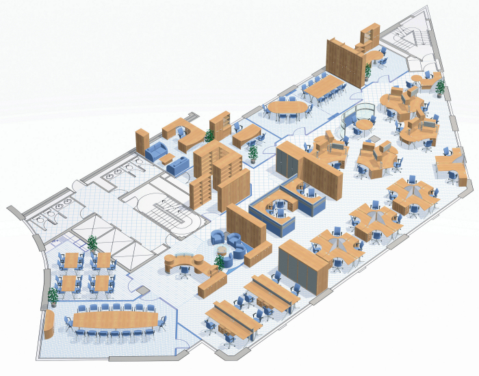

BIM Use: Programming

Programming
A process in which a spatial program is used to efficiently and accurately assess design performance in regard to spatial requirements.
The developed BIM allows the project team to analyze space and understand the complexity of space standards and regulations. Critical decisions are made in this phase of design and bring the most value to the project when needs and options are discussed with the client and the best approach is analyzed.
- Efficient and accurate assessment of design performance in regard to spatial requirements by the Appointing Party.
- Early validation of compliance with spatial standards and regulations.
- Design Authoring Software (e.g., Revit, ArchiCAD)
- Spatial Database Tools (e.g., dRofus, CodeBook)
- Ability to manipulate, navigate, and review a 3D model.
- Understanding of spatial data parameters (Room Names, Numbers, Department codes).